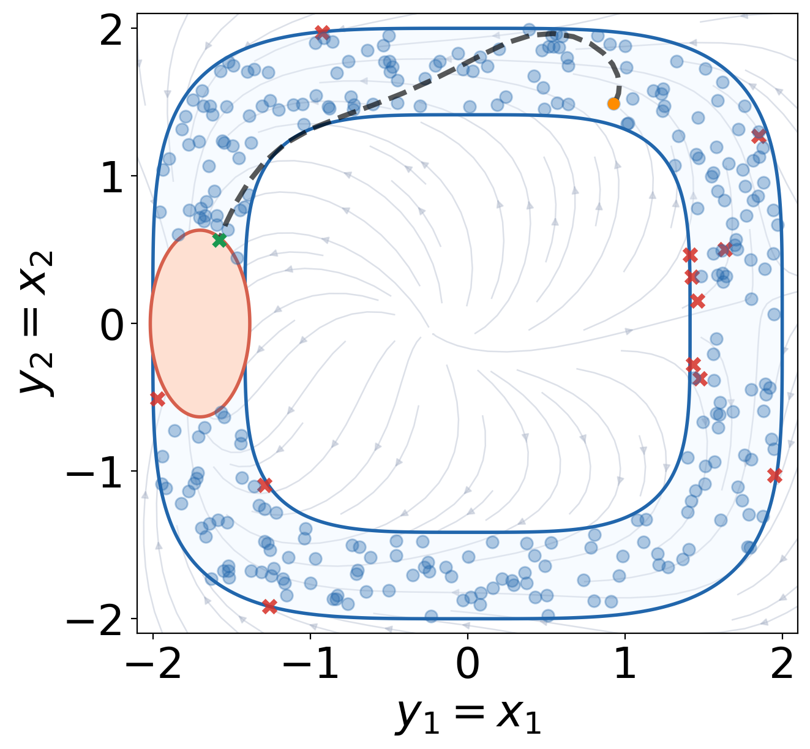
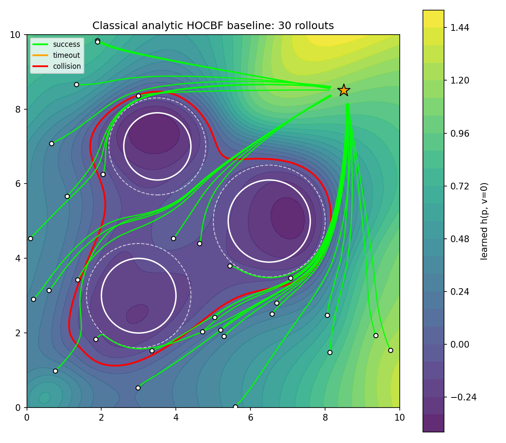

Research
Safe control · reachability · optimisation · multi-agent interaction
Lane-Less Autonomous Driving for Indian Roads
Dense Indian traffic has no usable lane structure. Vehicles of very different sizes and speeds share a continuous road surface, gaps open and close constantly, and drivers negotiate rather than follow rules. The models that autonomous driving research is built on, such as IDM and MOBIL, were calibrated on traffic that does not behave this way, so they cannot be trusted as a test environment here.
The work has two halves. The first builds a faithful re-simulation of this traffic and validates it against real trajectory data, so that any controller tested inside it is being tested against something real. The second is the planning and control pipeline for the ego vehicle, currently a model predictive controller combined with a repulsive-potential lookahead planner with discounted horizon.
The exact methodological details are confidential due to NDA with Honda but I am open to discussing the general approach and results.
Hybrid Reach-Avoid MPC with Backstepping Control
Model predictive control over a finite horizon can lead a sequence of individually reasonable local decisions to a state from which no feasible solution exists, and the optimiser simply fails. This is not a tuning problem, it is structural.
We propagate the actuator limits through the exponential control guidance barrier function backstepping construction, which embeds the input bounds as linear constraints inside the controller synthesis rather than imposing them afterwards. What comes out is a reach-avoid invariant set in which an admissible input is guaranteed to exist. Using that set as the terminal set makes recursive feasibility a property of the formulation: if the problem is feasible at the initial state it admits a feasible input at every step after it. A zero-order-hold implementation preserves the continuous-time guarantee under fast enough sampling.

Bilevel and Decentralised Optimisation
A bilevel problem is an optimisation whose constraint is itself an optimisation. The upper level chooses a decision, the lower level responds optimally to it, and the upper level has to account for that response when it differentiates. This structure appears wherever one decision maker anticipates another, which covers hyperparameter selection, Stackelberg games, meta-learning and a great deal of multi-agent control.
The difficulty is the hypergradient. Computing how the upper objective changes with the upper variable requires the sensitivity of the lower solution, which brings in an inverse Hessian that may be singular and a gradient that may be unbounded.
The first line studies the problem in continuous time. Writing the bilevel dynamics as a gradient flow driven by a hypergradient estimator, and analysing it with Lyapunov stability theory, yields guarantees across three regularity regimes. A normalised flow reaches the global optimum in finite time when both levels are strongly convex, a Polyak-Lojasiewicz upper level converges to a neighbourhood whose size is set by the problem conditioning, and a non-convex upper level still converges asymptotically.
The second line moves the problem onto a network, where no agent holds the whole objective and the hypergradient couples three global quantities at once, the outer variable, the lower-level solution, and the adjoint solution of a global linear system. Existing decentralised methods handle this with nested inner loops that over-communicate. Our algorithm updates every variable once per outer iteration, combining Nesterov extrapolation with Chebyshev-accelerated gradient tracking on the lower and adjoint states. The correction work per iteration is fixed and independent of the target accuracy, so no accuracy-dependent nested solve is needed, and the method still attains the accelerated network dependence known for single-level decentralised optimisation. Two separate lower bounds show the problem has two independent hardness mechanisms.
Transferable Neural Control Barrier Functions
A control barrier function defines a region of the state space a controller is proved never to leave. Learning one from data scales where hand construction does not, but a learned barrier is normally verified for a single fixed obstacle configuration, so changing the environment means retraining and reverifying.
A network trained in coordinates taken relative to one obstacle can be evaluated once per obstacle and reused across maps. In practice this works. The gap is that nobody checks whether it is allowed to: those relative coordinates may discard the very information needed to predict their own evolution.
This work states when the construction is valid. A generalised closure condition makes the discarded information explicit as a bounded residual, and a lifting theorem then transfers a barrier verified on a compact set of relative coordinates to every obstacle in every map. A rank condition, checkable before training, says in advance when symmetry alone cannot justify the transfer. Coordinates that fail it penetrate obstacles on a planar aircraft and break down near hover on a twelve-state quadrotor, while body-frame coordinates close exactly and the barrier learned in them deploys on unseen maps without retraining.
